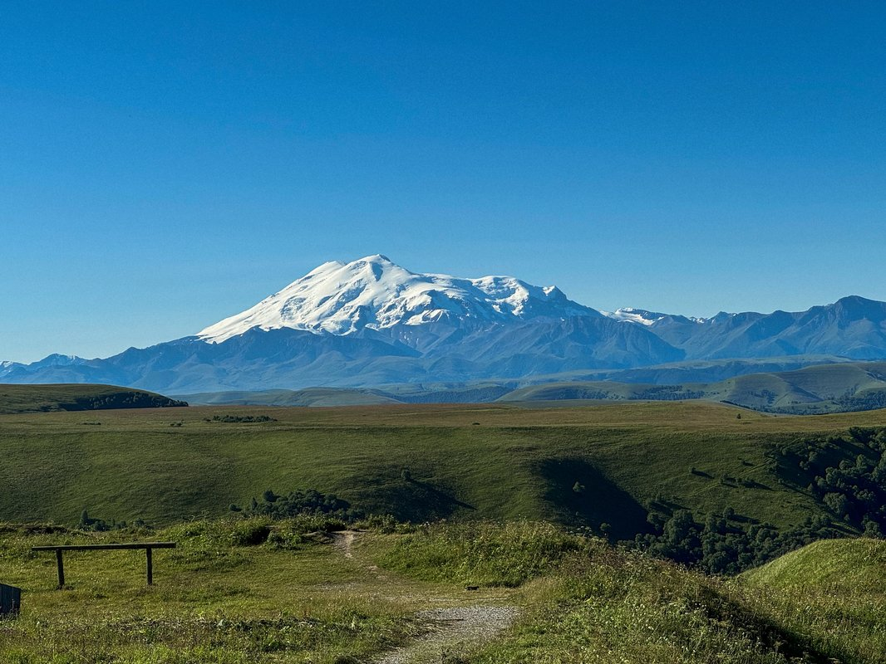

Восхождение на Эльбрус
Классический маршрут на высочайшую точку Европы. Испытайте себя на прочность в самом сердце Кавказа, наслаждаясь видами на заснеженные пики и ледники.
Подробнее о программе
- День 1: Прибытие в Приэльбрусье и акклиматизационный выход на высоту 3000м.
- День 2: Подъем в базовый лагерь, обучение работе с альпинистским снаряжением.
- День 3: Восход к вершине днем (5642м) и спуск в долину к вечеру.